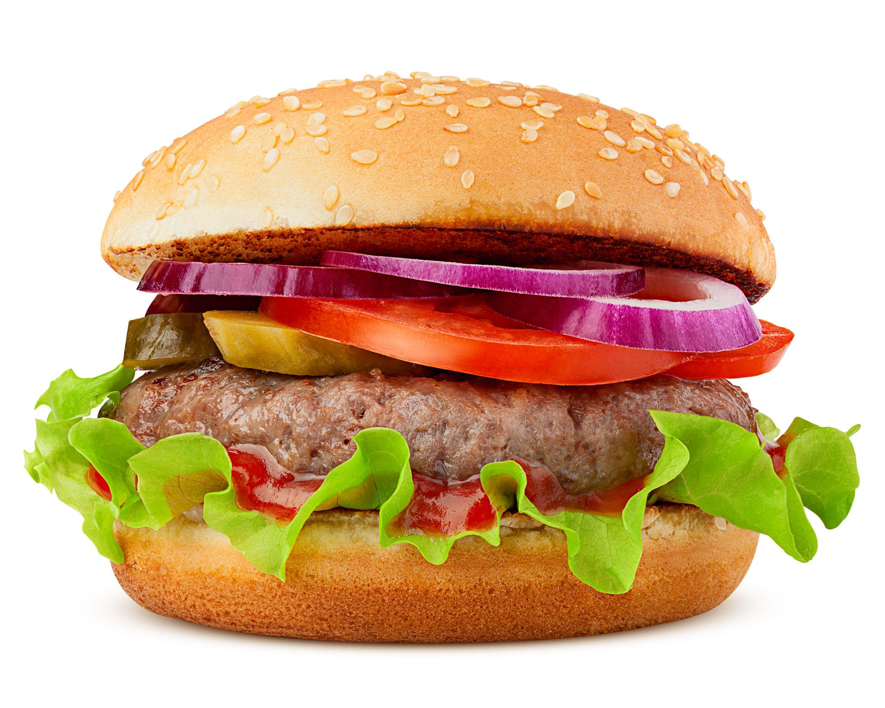

Burger

Description
A burger is a classic comfort food made with a juicy beef patty served inside a soft bun, usually topped with cheese, fresh vegetables, and flavorful sauces. It is simple to prepare and can be customized with a variety of toppings.
Ingredients
- Burger buns
- Ground beef
- Cheddar cheese
- Lettuce
- Tomato
- Onion
- Pickles
- Ketchup
- Mayonnaise
- Salt
- Black pepper
Steps
- Form the ground beef into burger patties and season both sides with salt and black pepper.
- Heat a pan over medium-high heat and cook the patties for about 4–5 minutes on each side.
- Place a slice of cheddar cheese on each patty during the last minute of cooking and let it melt.
- Toast the burger buns lightly in the pan.
- Spread ketchup and mayonnaise on the buns.
- Place the lettuce, tomato, and onion on the bottom bun.
- Add the cooked burger patty and top it with pickles.
- Place the top bun over the burger and serve.
Home Page